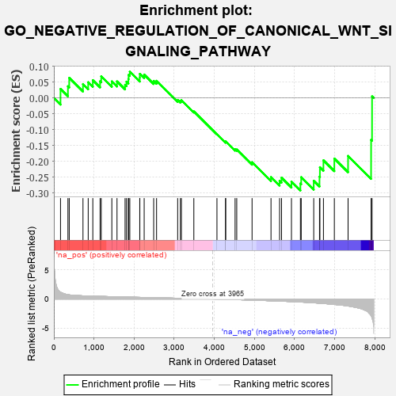
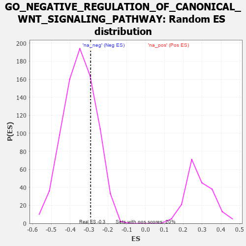

| | | Dataset | 7d |
| Phenotype | NoPhenotypeAvailable |
| Upregulated in class | na_neg |
| GeneSet | GO_NEGATIVE_REGULATION_OF_CANONICAL_WNT_SIGNALING_PATHWAY |
| Enrichment Score (ES) | -0.291674 |
| Normalized Enrichment Score (NES) | -0.8329233 |
| Nominal p-value | 0.7543641 |
| FDR q-value | 0.9797651 |
| FWER p-Value | 1.0 |
Table: GSEA Results Summary

Fig 1: Enrichment plot: GO_NEGATIVE_REGULATION_OF_CANONICAL_WNT_SIGNALING_PATHWAY
Profile of the Running ES Score & Positions of GeneSet Members on the Rank Ordered List
| PROBE | GENE SYMBOL | GENE_TITLE | RANK IN GENE LIST | RANK METRIC SCORE | RUNNING ES | CORE ENRICHMENT | | 1 | AXIN1 | | | 166 | 1.159 | 0.0284 | No |
| 2 | GSK3A | | | 351 | 0.745 | 0.0369 | No |
| 3 | AXIN2 | | | 383 | 0.713 | 0.0634 | No |
| 4 | NOTUM | | | 726 | 0.553 | 0.0438 | No |
| 5 | AMFR | | | 856 | 0.518 | 0.0496 | No |
| 6 | DVL3 | | | 971 | 0.490 | 0.0561 | No |
| 7 | PSMD7 | | | 1152 | 0.454 | 0.0527 | No |
| 8 | PSMD2 | | | 1181 | 0.450 | 0.0683 | No |
| 9 | RBX1 | | | 1445 | 0.401 | 0.0523 | No |
| 10 | FZD1 | | | 1574 | 0.379 | 0.0523 | No |
| 11 | TLE4 | | | 1775 | 0.341 | 0.0416 | No |
| 12 | PSMD4 | | | 1811 | 0.335 | 0.0514 | No |
| 13 | PSMD6 | | | 1858 | 0.326 | 0.0595 | No |
| 14 | TLE3 | | | 1863 | 0.325 | 0.0728 | No |
| 15 | CUL3 | | | 1893 | 0.321 | 0.0829 | No |
| 16 | JADE1 | | | 2141 | 0.286 | 0.0639 | No |
| 17 | PSME4 | | | 2143 | 0.285 | 0.0759 | No |
| 18 | PSMF1 | | | 2251 | 0.268 | 0.0738 | No |
| 19 | UBAC2 | | | 2488 | 0.229 | 0.0538 | No |
| 20 | PSMD5 | | | 2560 | 0.218 | 0.0541 | No |
| 21 | HDAC1 | | | 3086 | 0.138 | -0.0062 | No |
| 22 | SFRP5 | | | 3154 | 0.129 | -0.0092 | No |
| 23 | PSMD9 | | | 3179 | 0.125 | -0.0069 | No |
| 24 | GLI1 | | | 3489 | 0.079 | -0.0425 | No |
| 25 | SFRP2 | | | 4065 | -0.018 | -0.1142 | No |
| 26 | PSME3 | | | 4280 | -0.056 | -0.1388 | No |
| 27 | WNT11 | | | 4282 | -0.056 | -0.1366 | No |
| 28 | WNT5B | | | 4517 | -0.098 | -0.1619 | No |
| 29 | APC | | | 4558 | -0.107 | -0.1624 | No |
| 30 | FZD4 | | | 4940 | -0.186 | -0.2025 | No |
| 31 | LATS1 | | | 5412 | -0.298 | -0.2492 | No |
| 32 | ROR2 | | | 5626 | -0.353 | -0.2611 | No |
| 33 | PSMD1 | | | 5674 | -0.367 | -0.2514 | No |
| 34 | STK11 | | | 5922 | -0.443 | -0.2637 | No |
| 35 | STK4 | | | 6145 | -0.518 | -0.2696 | Yes |
| 36 | EGR1 | | | 6165 | -0.527 | -0.2496 | Yes |
| 37 | SOX2 | | | 6477 | -0.652 | -0.2610 | Yes |
| 38 | SCYL2 | | | 6621 | -0.724 | -0.2482 | Yes |
| 39 | WWTR1 | | | 6631 | -0.729 | -0.2183 | Yes |
| 40 | GSK3B | | | 6719 | -0.768 | -0.1965 | Yes |
| 41 | NPHP4 | | | 6991 | -0.931 | -0.1911 | Yes |
| 42 | CYLD | | | 7333 | -1.206 | -0.1827 | Yes |
| 43 | PSMD3 | | | 7907 | -2.887 | -0.1320 | Yes |
| 44 | PSMD8 | | | 7931 | -3.286 | 0.0050 | Yes |
Table: GSEA details [plain text format]

Fig 2: GO_NEGATIVE_REGULATION_OF_CANONICAL_WNT_SIGNALING_PATHWAY: Random ES distribution
Gene set null distribution of ES for GO_NEGATIVE_REGULATION_OF_CANONICAL_WNT_SIGNALING_PATHWAY